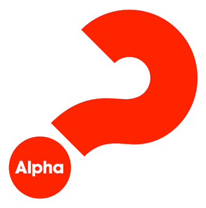

Equip
Resources for every ministry.
Always Foundation is a new initiative that brings churches and Christian ministries together. We provide the tools, resources and connections they need to serve Christ and their communities.
One faith. Many ministries. A shared mission.
Who we are
Across Australia, churches and ministries are sharing the Gospel, making disciples and serving their communities. We exist to support their work.
We work in the background, supporting the churches and ministries that lead the work.
We're being established now, and we're testing our first tools with churches and ministries.
“Not to us, O Lord, not to us, but to your name give glory” Psalm 115:1
How we help: Always Platform
We build practical tools once and share them freely, so every member has more time for ministry. Your team signs in once and uses whichever they need.
Resources for every ministry.
More time for ministry.
One body. Many members.
Help that never sleeps, with a person in charge.
The foundation everything runs on.
Stories
“Behold, I am doing a new thing; now it springs forth” Isaiah 43:19

UEN
A Christian gaming ministry that helped found Always Platform and tried it at youth events.

Sydney Fire Evangelism
Street evangelists using their own branded response app, live in a ministry setting.

AlphaAn Alpha integration: people who choose "Explore faith" can find a course near them straight away.
CXMMXNS
A worship tour of cities across Australia, with a next step for everyone who responds.
Rejoice
An Australian Christian tech company whose apps offer people a next step through the platform.
Who it's for
Churches, youth ministries, evangelists, events, networks and the Christian tech platforms that serve them.
Welcome people near you who have said yes to Jesus, and help them grow as disciples.
Keep young people safe, stay compliant, and give every young person a safe next step.
Give everyone who responds a next step near home, and show funders the fruit.
Share Jesus with confidence, save every contact safely, and connect people with a local church.
Help every church be ready to welcome, and see the fruit across your network, with totals only.
Build compliance, handoff and church data into your own product, on open standards.
Whether you're a church, Christian ministry or supporter, we invite you to join us. Together, we can strengthen the work of the Gospel across Australia.
An independent, member-based Christian nonprofit. Free for churches; larger ministries contribute according to their size. How we work
“The harvest is plentiful, but the laborers are few” Matthew 9:37
hello@alwaysfoundation.orgTogether for the Gospel. We bring churches and Christian ministries together, providing the tools, resources and connections they need to serve Christ and their communities.
Always Foundation is a new initiative. We are being established now, and we are testing our first tools with churches and ministries.
Across Australia, churches and ministries are sharing the Gospel, making disciples and serving their communities. Jesus sent His Church to “go therefore and make disciples of all nations” (Matthew 28:19, ESV), and no single church or ministry carries that alone.
Yet many ministries each build and pay for the same tools, carry heavy administration, and struggle to pass people on to one another safely. Too many people respond to Jesus and never find a church family. We exist to support their work, so ministries can devote more of their time and resources to what matters most.
Equip. Free, open-source technology and practical tools for churches and Christian organisations, including the Always App for every Christian who shares the Gospel.
Support. Shared tools for governance, compliance, safeguarding and reporting that make everyday operations simpler.
Connect. Common standards and a connected network that help ministries work together, share resources and connect people with local churches.
All of it runs on Always Platform, our open-source technology. Our focus is Australia, and the Church in other nations is free to use it too.
One faith. Many ministries. A shared mission: the Gospel going further across Australia, and more people worshipping Jesus.
Our values: Christ-centred. Gospel first. Built together, shared freely. People's details stay theirs.
From Jesus' promise in the Great Commission: “I am with you always” (Matthew 28:20, ESV).
We serve quietly, in the background. Churches and ministries lead the work, and we support them.
Always Foundation is an independent, member-based Christian nonprofit. Our members help shape what we build, contribute to common standards and share in the benefits. Churches use it free, and larger ministries contribute according to their size.
Members affirm the Nicene Creed (AD 381), so churches across denominations can serve together on the historic faith. The foundation is being established as an Australian not-for-profit company limited by guarantee, to register as a charity with the ACNC.
Everything about how Always Platform works, for churches, ministries, people and builders.
Solutions
Welcome people near you who have said yes to Jesus, and help them grow as disciples. Free, always.

Tell us about your church and who you are. It takes about ten minutes.
We check with your denomination or network, and your connect lead does a 20-minute course.
When someone nearby asks for a next step you offer, accept or pass. Then call or text from your own phone.
A free web app for your team. Nothing to install, so your connect lead can say yes from their phone on a Sunday.
Always Connect · Inbox
Your welcome, service times, what to expect, and the next steps you offer, in your colours.
People who have already said yes to Jesus, within the area you choose.
Choose what you offer and how many people you can welcome each month. Pause any time.
Invite your pastor, connect lead and youth leaders, each with the right access.
Keep track of everyone you are welcoming, and get a simple monthly report for your leaders.
Use the free inbox, or connect your church management system through the API.
Solutions
Tours, camps, outreach and online ministries: free tools to share the Gospel, less administration, and a next step near home for everyone who responds.

Choose the next steps you offer and add your brand. Ready in minutes.
Show the QR code on the big screen, hand out cards, or use the response card in your own app.
Watch results live, and get a monthly report ready for your funders and board.
People respond on a page that looks like you. Your team sees totals live, and each person's details go only to the church that welcomes them.
Example figures. Totals only.
YOUR MINISTRY
Said yes tonight? Take your next step.
Answer to donors, a foundation or a denomination? Always Platform writes your report each month. Nothing extra to enter.
Example figures. Totals only.
Shared tools for the everyday work behind every ministry, with agents to help with follow-up and admin, so your team can spend more time on people.
Shared policies, templates and member records for boards and leaders.
Consent records and privacy requests, ready to export when you need them.
Child safety checklists and Working With Children Check reminders, kept in one place.
A monthly report for your board and funders, with totals only.
Sharing a testimony, sermon or post? Add a response link or QR code. Anyone in Australia can say yes and meet a church near them.
For the big screen, printed cards, video descriptions and short links.
Simple wording for the altar call: invite, pray, respond, welcome.
Response team leads, evangelists and youth leaders, each with the right access.
Young people are introduced only to verified youth partners. Under 15s need a parent to confirm.
A monthly report with clear definitions, ready for donors, foundations and your board.
Help your team with reminders, messages and records. A person approves every step.
Always Platform: Equip
Everything a Christian needs to share Jesus and walk with people.
A Bible, conversation guides, training and follow-up in one free app, so every yes can grow into a disciple.
Join the pilotAlways App · in your browser
Who will you walk with today?
“For the Son of Man came to seek and to save the lost.”
Luke 19:10 (ESV)Pray for Sam, Priya and Josh

A free web app with everything you need to share Jesus. Nothing to download: open it in your phone's browser and add it to your home screen.
John 3 · ESV
316 For God so loved the world, that he gave his only Son…
The Always path
Someone said yes to Jesus. Give them a next step.
Walking with Sam
Near you
Built on Always Platform: Connect uses the church feed and events, Gather uses response pages and the handoff, and the Bible comes through the YouVersion Platform.
KJV and WEB built in, more through YouVersion. Highlight, share verses as images, listen with soft music and a sleep timer.
How to share with someone with no faith, a Muslim friend, a Jehovah's Witness, a Buddhist and more.
Start a response point in seconds, coach the moment, and connect people with their yes.
Pray for people by name and keep short notes after a conversation. They stay in your browser, on your own device.
Connect leads accept introductions in Always Connect, on the web.
Your prayer list, notes and plans stay on your own device. No ads.
Short, free courses you can do in any browser, made with evangelists and churches.
Tell how Jesus changed your life, in three minutes, in your own words.
What to say, how to pray, and what to do next when someone says yes.
For church connect leads: the first call, the first coffee, the first Sunday.
Child safe practice for youth leaders and events.
Listening well and sharing gently with friends of other beliefs.
The first months of following Jesus: Bible, prayer, church and friends.
Running a street team, an outreach or a tour? Get your own branded response app on Always Platform, like Sydney Fire Evangelism's, and use the same open tools we use, free.
People say yes on a page with your name on it, and get a next step near home.
Add our church finder to your website or app in one line.
Like Sydney Fire Evangelism: your logo, your next steps, and contacts saved safely in Australia.
Reminders and message drafts after outreach. A person approves every step.
Monthly reports written for you, with totals only.
Every tool is open, so you can check it, improve it or run it yourself.
Short answers to the questions we hear most.
An independent, member-based Christian nonprofit that brings churches and Christian ministries together. We equip them with free, open-source tools, support them with shared tools for governance, compliance, safeguarding and reporting, and connect them as one network.
Churches and Christian ministries that affirm the Nicene Creed. Members help shape what we build and share in the benefits. Supporters can join us too, through prayer and giving.
The open-source technology behind everything we offer members: branded response pages, forms, reports, the directory and the Always App. Developers can build on it too.
The Always Foundation, a members-based not-for-profit being established in Australia. Churches and ministries that affirm the Nicene Creed are its members.
No. Evangelical and Pentecostal churches and ministries across denominations and networks take part, on the common ground of the Nicene Creed.
Our focus is Australia. The technology is open source, so churches and ministries in other countries are welcome to use it.
With one Always account, using Apple, Google, YouVersion or your email. The same account works across the Always App and every tool built on Always Platform.
No. Churches never pay. Larger ministries contribute according to their size.
Claim your church's page, and we verify you with your denomination or network.
Pass, with a reason. The next church or ministry nearby is asked. If none can, our care team helps.
No. Use the free Always Connect inbox, in any browser, or connect your system through the API. Elvanto and Planning Center come first.
You're verified, trained, have room this month and usually reply on time. If you get busy, introductions simply pause.
Only the people you add to your team, and only after your church accepts an introduction.
Yes. Response pages, QR codes and texts can use your colours, logo and wording.
Totals for each event: responded, introduced, accepted and connected. Each person's details go only to the church that welcomes them.
Yes. It writes a monthly report for you: who responded, who was introduced, who was contacted, and who is now part of a church family. Download it as a PDF or spreadsheet, or send your funder a link.
No. Reports show totals only, and small numbers are hidden so no one can be identified.
Yes. Your Compliance tab keeps your consent records, privacy requests, child safety checklists and Working With Children Check reminders, ready to export.
Yes. Add your title, your funder's name and a short introduction. If a funder needs something specific, talk to us.
Yes, for the steps you offer, like a youth night or a course.
Yes. Add a response link or QR to a video description or post, or embed the response card on your website. An invisible check stops spam without puzzles.
Yes. Add them when you sign in to Always, and they show on our Events page and in Always App.
With Always App, a free web app: they start a response point, show their own QR, or connect someone in a conversation with their yes.
You choose a next step, see who will be in touch, and a church or ministry near you reaches out.
Your first name, a mobile number and your suburb.
No. You respond on a simple web page. Later, you're welcome to try Always App in your browser to read the Bible and grow.
Yes, any time, from the link in your text. Your details are then deleted.
Yes. If you're under 15, a parent or guardian says yes with you. From 15 you can decide for yourself. Young people are introduced only to verified youth partners, and no AI ever touches your information.
Every Christian who wants to share Jesus and walk with people, and church teams who welcome them.
It's a web app, so there's nothing to download. It's in pilot: join through the form on our home page.
Not for now. The Always App and our tools for churches and ministries run in the browser on your phone, tablet or computer, and you can add it to your home screen.
The King James Version and the World English Bible, with more through YouVersion.
In your browser, on your own device. They aren't sent to us.
In Australia, encrypted, under Australian privacy law.
No.
To save time on routine work, like writing your monthly report. Every welcome comes from a real person, and young people's information is kept out of AI entirely.
A guide to the privacy, child safety, charity and messaging rules that apply to your ministry, with a check-up every quarter that a person at your ministry approves, and updates when the law changes. It is free for churches and is not legal advice. Try the free check-up at alwaysfoundation.org/#/compliance.
They help your team with follow-up and administration: drafting messages, setting reminders and keeping records up to date. A person approves every step, people's details stay in Australia, and agents never handle young people's information.
Email safeguarding@alwaysfoundation.org for safeguarding, privacy@ for privacy and security@ for security.
By supporters, and by larger ministries contributing according to their size. Churches never pay.
Pray with us, and get in touch at hello@alwaysfoundation.org to book a catch-up call.
Yes. The API, SDK and open standard are open source under Apache 2.0, with docs under CC BY 4.0. An MCP server for AI assistants is coming, and it never sees a person's details.
Email hello@alwaysfoundation.org. We'd love to book a catch-up call.
Christian events across Australia: worship nights, concerts, outreach, youth camps, courses and training. Go together, and bring someone.
Parramatta, NSW
Sydney, NSW
Liverpool, NSW
Blacktown, NSW
Geelong, VIC
Brisbane, QLD
Perth, WA
Adelaide Hills, SA
Hobart, TAS
No events match yet. Try another state or type.
Example events while the calendar is in pilot.
Churches and ministries add events when they sign in to Always. Anyone can suggest one, and our team checks every event before it shows.
Manage your page, choose the next steps you offer, and start welcoming people near you. Free, always.
Our team will check with your denomination or network and email you when your page is ready.
Read about welcoming wellHelp us make Always Platform better. Share an idea, report something that isn't working, or tell us about a church we've missed.
We learn in the open: briefs and field notes from building Always Platform with churches and ministries.
Every week people respond to Jesus at events, services and online. We're studying what happens after someone says yes: where people get lost, and what helps them take a next step.
How a consent receipt can move between ministries and systems, what it records, and why every system checks it before it acts. Built on ISO/IEC TS 27560 for consent records.
Read moreThe Always Network grew out of an earlier project called Branches. Its agent checked each response and handed it to a person before anything was shared. Trialled at a youth event with UEN, it shaped how the Always Agent works today.
Read moreWhat we count, what we don’t, and why a person is only counted as connected when they say so themselves. Totals only, with minimum group sizes so no one can be identified.
Read moreWorking on discipleship, follow-up or faith and technology in Australia? We'd love to collaborate and share what we learn. Email hello@alwaysfoundation.org.
How Always looks and sounds. Use it freely when you talk about Always.
The word "always", ending in a cross: Jesus at the end of every always.
![Always Foundation logo]()
![Always Foundation logo on green]()
Designers: a light logo with no background is there for placing on your own green.
For profile pictures, social media, app icons and anywhere that needs a square. 1024 by 1024 pixels.
Deep green and warm cream, with peach for the one thing to press.
#1B4740The brand colour#F8F3EAPages and space#DDE9E0Scripture and calm#1E2A26Text and footers#E8A577One main button#EE8B54The cross only#A4562ALinks on creamManrope, for headlines
Every yes deserves a next step.
Inter, for everything else
Free for every church. Kept in Australia. Nothing shared without permission.
Newsreader, for Scripture
“Lo, I am with you alway.”
Matthew 28:20
Warm and plain, like a pastor at the door.
| Say | Not |
|---|---|
| welcome, introduce, walk with | route, dispatch, funnel |
| people who said yes to Jesus | leads, contacts, records |
| next step | conversion |
| free for every church | free tier |
Need something else, like slides or social templates? hello@alwaysfoundation.org
Always Platform
Always Platform is the open-source technology behind every Always product. Ministries use the products; developers and partner platforms can build on the same foundation.
Grouped by how they help: equip, support and connect ministries, with agents to lighten the load and open tools to build on.
Resources for every ministry.
More time for ministry.
One body. Many members.
Help that never sleeps, with a person in charge.
The foundation everything runs on.
Welcome people near you who have said yes to Jesus, and help them grow as disciples.
Keep young people safe, stay compliant, and give every young person a safe next step.
Give everyone who responds a next step near home, and show funders the fruit.
Share Jesus with confidence, save every contact safely, and connect people with a local church.
Help every church be ready to welcome, and see the fruit across your network, with totals only.
Build compliance, handoff and church data into your own product, on open standards.
Always Platform: Build
The API, SDK, feeds and AI connector, for developers and partner platforms.
The same open-source foundation every Always product runs on, ready for your own website, app or platform.
// Find churches welcoming people near 2150
import { AlwaysClient } from '@always/sdk';
const always = new AlwaysClient();
const { items } = await always.feed.churches({
postcode: '2150', welcoming: true,
});Four ways to build
Give people a next step with your name and colours on it: response pages, QR codes, event screens, and pieces for your own app.
Plug Always Platform into the church and ministry tools you already use. Plain, well-documented and open.
Ready-made pieces for websites and apps, like "Find a church near me", so you can build in minutes.
Ask Claude and other assistants to find a church or an event nearby. No one's personal details are ever involved.
Built on Always Platform
The Always App, and our tools for churches and ministries, are free web apps that run in any browser, with nothing to download. Each one talks to the platform through the same public API and SDK that are open to you. There's no private back door: if we can build it, so can you.
Web app
Share Jesus, start a response point and walk with people.
Web app
Accept or pass introductions, welcome people and keep walking with them.
Web app
Branded response pages, live results, funder reports and compliance.
What it does
Verified churches near any postcode, ready to welcome and safe for young people.
Pass on someone who said yes, with their permission.
Churches say yes, reach out, and keep walking with them.
Christian events across Australia, in one place.
Show supporters what God is doing, without sharing a single name.
Agents draft follow-up messages, reminders and records for your team. A person approves every step.
How it fits together
What never changes
Always Platform: Equip
Your own branded response pages, from the street to the altar call to online.
Wherever someone says yes to Jesus, give them a simple page that looks like you. One scan or tap takes them from a moment online, on the street or in the room to a real next step.
A QR card or phone link so evangelists can save a contact in seconds, safely.
Put a code on the big screen and let everyone who responds say so, then and there.
A page for your event, campaign or video, with a clear way to respond.
A link for comments and posts, or a form you embed in your own website or app.
Every response can become a welcome from a local church or ministry, with consent.
Consent recorded on every form. Age asked first. Live totals with no names on screen.
Every page carries your logo, colours and words, on your own link. People meet your ministry, not ours. We stay in the background.
Every Always product runs on Always Platform, with one sign-in for your team.
Always Platform: Support
A monthly report for your board and funders, written for you, with totals only.
Answer to donors, a foundation or a denomination? Always Reports writes your report each month from what already happened. Nothing extra to enter.
A clear monthly report, ready for your board and funders.
No names. Small numbers are hidden so no one can be identified.
Use your funder's titles and the outcomes they care about.
PDF, spreadsheet, or a link you can switch off.
Responded, introduced, contacted and now part of a church family, defined the same way every month.
One report, or one for each event, tour or campus.
Every Always product runs on Always Platform, with one sign-in for your team.
Always Platform: Connect
The church directory and a safe, consent-based handoff, so no one walks alone.
When someone says yes to Jesus, Always Connect helps them find a next step near home, often a local church and sometimes another ministry, with a real person reaching out.
3,937 churches and ministries mapped across Australia, each able to claim its page.
We check with each church's denomination or network before anyone is introduced.
The person chooses their next step and sees who will reach out before anything is shared.
Accept or pass introductions from any phone, and keep walking with people.
People exploring faith can choose Alpha. Others may need a youth group or a care team.
If no one nearby can help, the Always care team reaches out.
Every Always product runs on Always Platform, with one sign-in for your team.
Always Platform: Agents
Help with follow-up and admin. A person approves every step.
Always Agents take on the repetitive work of follow-up and administration, so your team can spend its time with people. Every agent works for a person, and a person approves every step.
Now in pilot with the foundation team.
Drafts welcome messages and reminders after an event, for your team to check and send.
Keeps records up to date and prepares drafts for your reports and compliance check-up.
Agents suggest. Your team approves, edits or ignores every step.
Young people's information is kept out of AI entirely.
People's details are stored and processed in Australia.
An audit trail shows what each agent suggested and who approved it.
Every Always product runs on Always Platform, with one sign-in for your team.
Solutions
Keep young people safe, stay compliant, and give every young person a safe next step.
Child Safe Standards, working with children checks and privacy, with a quarterly check-up your board approves.
Age comes first. Under-15s need a parent to confirm, and young people are introduced only to verified youth partners.
Monthly reports for your board and funders, with totals only.
Stay lawful on privacy, child safety, charity and messaging rules, with a quarterly check-up.
For every ministryEquipYour own branded response pages, from the street to the altar call to online.
For churches, evangelists, events and ministriesConnectThe church directory and a safe, consent-based handoff, so no one walks alone.
For churches, ministries and eventsSupportA monthly report for your board and funders, written for you, with totals only.
For ministries with boards and fundersSolutions
Share Jesus with confidence, save every contact safely, and connect people with a local church.
Bible, conversation guides and short training in the Always App.
Your own branded response app, like Sydney Fire's, with contacts kept safe in Australia.
With their consent, pass people to a church near them or to Alpha if they want to explore faith.
Everything a Christian needs to share Jesus and walk with people.
For every Christian and evangelistEquipYour own branded response pages, from the street to the altar call to online.
For churches, evangelists, events and ministriesConnectThe church directory and a safe, consent-based handoff, so no one walks alone.
For churches, ministries and eventsAgentsHelp with follow-up and admin. A person approves every step.
For ministry teamsStory
Street evangelists using their own branded response app.
Read the storiesSolutions
Help every church be ready to welcome, and see the fruit across your network, with totals only.
Help every church in your network claim its page, get verified and be ready to receive people.
Combined reports across your churches, with totals only.
One view of privacy and child safety obligations, so every church can stay lawful with less admin.
The church directory and a safe, consent-based handoff, so no one walks alone.
For churches, ministries and eventsSupportA monthly report for your board and funders, written for you, with totals only.
For ministries with boards and fundersSupportStay lawful on privacy, child safety, charity and messaging rules, with a quarterly check-up.
For every ministryBuildThe API, SDK, feeds and AI connector, for developers and partner platforms.
For developers and Christian tech platformsSolutions
Build compliance, handoff and church data into your own product, on open standards.
Use the open Always Compliance register and check-up API, so your users stay lawful without leaving your app.
Pass people to a verified church or ministry near them, with consent that travels with the data.
Open-source code, the Always Handoff standard, and personal data kept in Australia.
The API, SDK, feeds and AI connector, for developers and partner platforms.
For developers and Christian tech platformsSupportStay lawful on privacy, child safety, charity and messaging rules, with a quarterly check-up.
For every ministryConnectThe church directory and a safe, consent-based handoff, so no one walks alone.
For churches, ministries and eventsStory
Our first Always Compliance user, ready to roll it out to youth ministries and churches.
Read the storiesAlways Platform: Support
Stay lawful on privacy, child safety, charity and messaging rules, with a quarterly check-up.
Know where your ministry stands, approve a simple check-up every quarter, and hear when the law changes.
Free for churches. A guide to common obligations, not legal advice.
The rules most Australian churches and Christian ministries need to know, matched to where you work and what you do.
The Privacy Act, data breaches, and the new Children's Online Privacy Code.
Working with children checks and the Child Safe Standards in your state.
ACNC annual reporting, Governance Standards and record keeping.
Spam Act rules for newsletters, invitations and appeals.
Eleven quick questions about where you work and what you do decide which rules apply.
Answer yes or no. Always fills in what it already does for you, like consent records and keeping details in Australia.
Each quarter we draft your assessment. A person at your ministry reviews it and approves it for your board.
We watch official sources every day and tell you what changed, in plain English.
About ten minutes. You don't need an account, and nothing you enter is sent or saved.
Our agents check official sources every day and draft a summary of anything that changes. A qualified reviewer checks every change before it reaches you, and every obligation links to its official source.
The list of obligations is open data. Denominations, safe ministry teams and church software makers can use it too, so the whole sector shares one reviewed view of the rules.
Free for churches. Larger ministries contribute according to their size. One sign-in with every Always product.
![Always Foundation square logo]()
![Always Foundation square logo on green]()
![Always Foundation icon: the cross]()